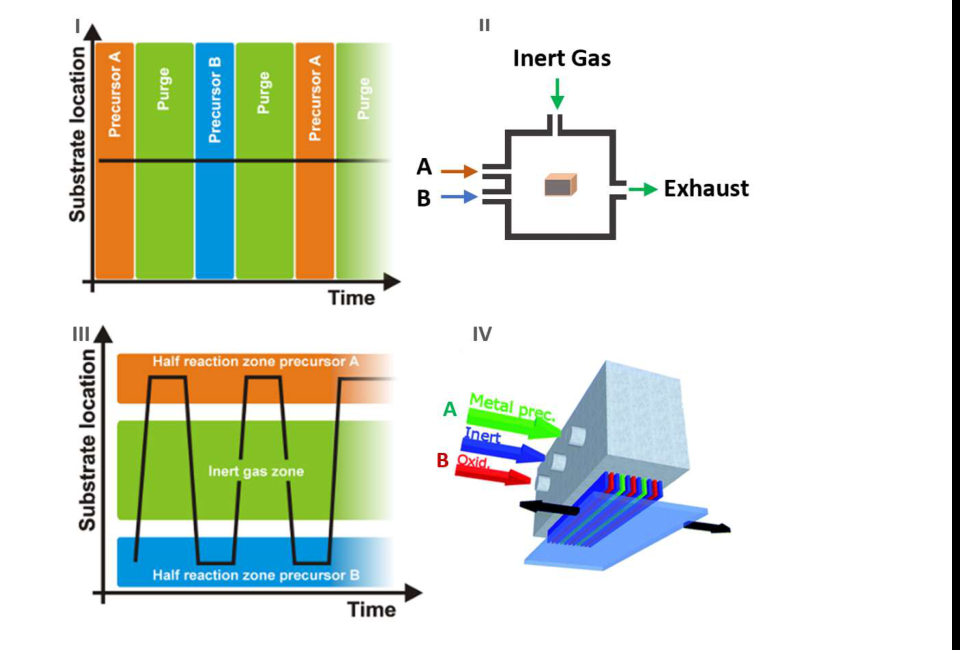
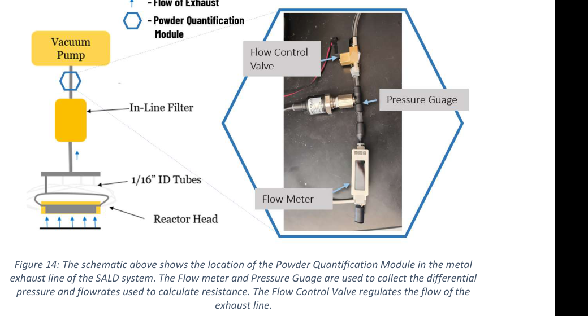
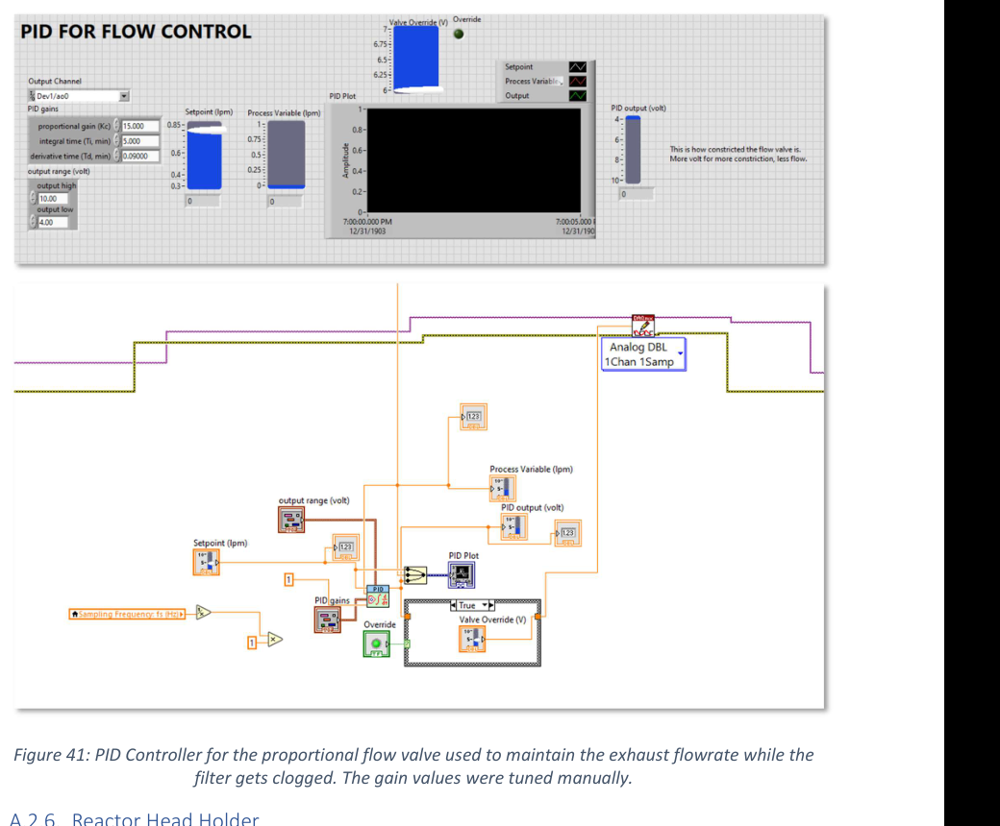
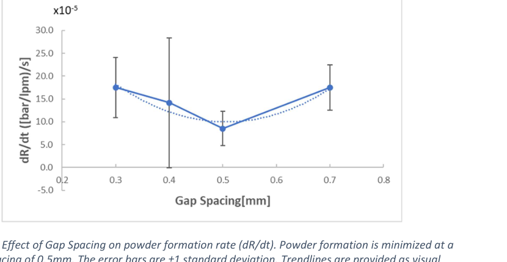
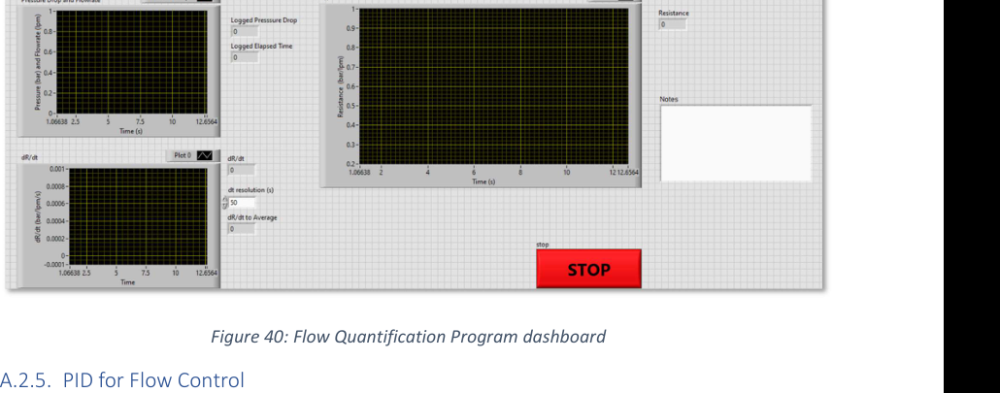
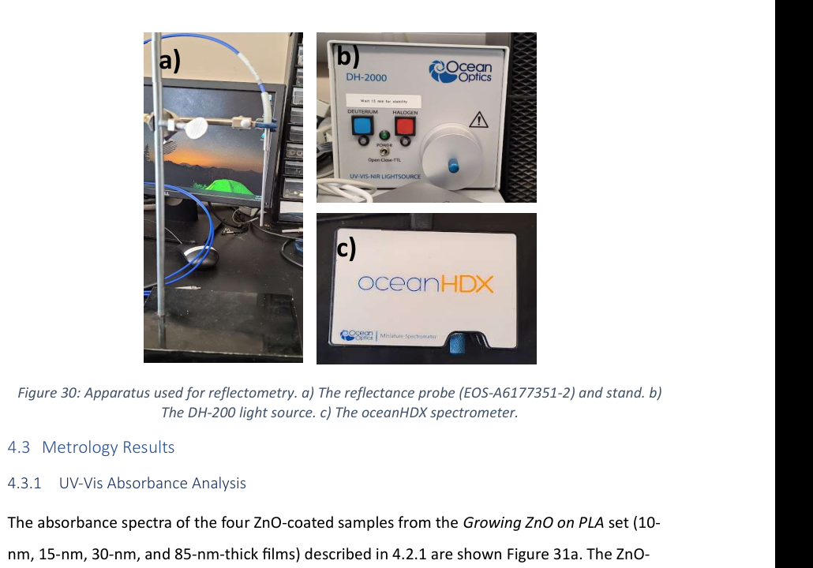

Problem
Spatial atomic layer deposition enables high-throughput thin-film manufacturing by separating precursor exposure in space instead of time. The industrial challenge is reliability: powder formation can reduce film quality, clog exhaust lines, alter flow balance, and increase maintenance; high-throughput systems also need in-situ film quality monitoring.
- Manufacturing target: scalable SALD processes for conformal thin films.
- Reliability issue: powder/dust formation in the substrate region, reactor head, and exhaust line.
- Quality issue: need for real-time film-thickness and film-quality monitoring for industrial production.


Powder quantification
A powder quantification module used exhaust-filter resistance measurements to estimate powder formation rates during deposition. The method enabled systematic process studies instead of relying only on visual observation or post-run cleaning.
PID exhaust flow control
A proportional valve controller maintained exhaust flow while filters clogged, keeping flow conditions more stable during experiments.

Process-variable optimization
Powder formation was studied against gap spacing, curtain flow, temperature, precursor concentration, and exhaust behavior.

LabVIEW data capture
DAQ and software tools supported resistance, flow, and pressure tracking for repeatable powder-formation studies.

Metrology exploration
Absorbance spectroscopy, reflectometry, and ellipsometry were tested for measuring SALD-produced Al2O3 and ZnO films on flexible PLA samples. Absorbance worked for small ZnO thicknesses, while Al2O3 and multilayer/flexible substrates required more advanced optical modelling.
- Absorbance showed promise for ZnO films in the 12-85 nm range.
- Al2O3 did not show clear absorbance peaks in the tested setup.
- Ellipsometry and reflectometry data showed thickness sensitivity, but modelling needs to account for substrate orientation and multilayer refraction effects.

Source basis: MASc thesis, “Advancing the Industrialization of Thin Film Deposition...” and the previous SALD portfolio assets generated from that thesis.